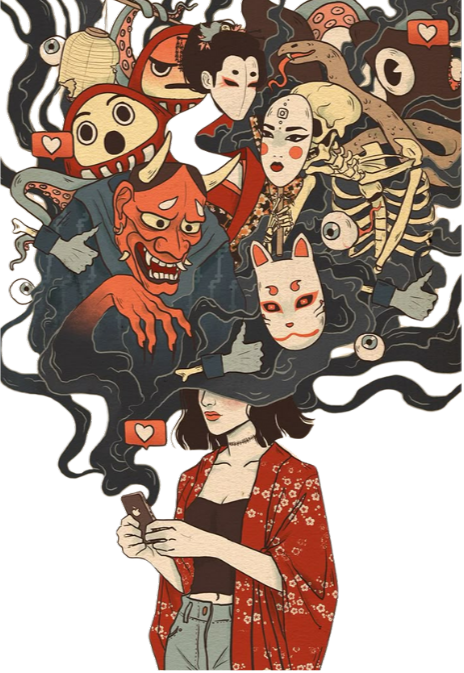

<link rel="stylesheet" href="css/lendas.css">
<section class="lendas-container">

    <div class="lendas-conteudo">
        <h2>Lendas</h2>
        <p>Aqui você vai conhecer desde a astuta raposa à deusa do sol, da princesa do bambu ao homem do pêssego, cada
            lenda traz um mistério único. Prepare-se para o inesperado…</p>
        <p>SELECIONE UMA LENDA:</p>


        <button class="botao-lenda" data-lenda="momotaro">Momotarō - O Menino do Pêssego</button>
        <div class="historia" id="momotaro">
            <p>Momotarō nasceu de um pêssego gigante encontrado por um casal idoso. Criado com amor, ele partiu em uma
                jornada heroica para enfrentar ogros que aterrorizavam sua vila, com a ajuda de um cachorro, um macaco e
                um faisão.</p>
        </div>


        <button class="botao-lenda" data-lenda="coelho_lua">Coelho da Lua</button>
        <div class="historia" id="coelho_lua">
            <p>A mitologia japonesa diz que, ao observar a Lua, é possível ver a imagem de um coelho fazendo
                mochi(bolinho de arroz). A história conta que o coelho, vendo um deus disfarçado de viajante faminto,
                lançou-se ao fogo como oferenda. Comovido, o deus o levou para viver na Lua como recompensa por sua
                compaixão. Essa lenda está ligada ao festival Tsukimi, em que se celebra a Lua cheia e o sacrifício
                altruísta.</p>
        </div>


        <button class="botao-lenda" data-lenda="rokurokubi">Rokurokubi</button>
        <div class="historia" id="rokurokubi">
            <p>Durante o dia, Rokurokubi parecem pessoas normais, mas à noite seus pescoços se estendem de forma
                sobrenatural. Algumas observam os outros à distância; outras, mais perigosas, atacam. A origem dessas
                criaturas está ligada a maldições ou culpas cármicas. São figuras assustadoras que simbolizam o lado
                oculto da natureza humana.</p>
        </div>


        <button class="botao-lenda" data-lenda="kuchisake_onna">Eu Sou Bonita? (Kuchisake Onna)</button>
        <div class="historia" id="kuchisake_onna">
            <p>Kuchisake Onna é uma figura do terror urbano japonês. Trata-se do espírito de uma mulher com a boca
                rasgada de orelha a orelha, que cobre o rosto com uma máscara cirúrgica. Ela aborda pessoas à noite
                perguntando: “Eu sou bonita?”. Se a resposta for negativa, ela mata a vítima. Se for positiva, ela
                remove a máscara, mostra sua deformidade e repete a pergunta. As respostas comuns não garantem segurança
                — apenas astúcia ou distração podem salvar quem a encontra. Essa lenda representa o medo do desconhecido
                e da aparência enganosa.</p>
        </div>

        <button class="botao-lenda" data-lenda="amaterasu">Amaterasu - A Deusa do Sol</button>
        <div class="historia" id="amaterasu">
            <p>Amaterasu é a deusa do sol e uma das principais divindades do xintoísmo. Após um confronto com seu irmão
                Susanoo, deus das tempestades, Amaterasu esconde-se em uma caverna, mergulhando o mundo em escuridão.
                Para trazê-la de volta, os outros deuses organizaram uma festa diante da entrada da caverna e colocaram
                um espelho do lado de fora. Curiosa com os sons e a luz refletida, Amaterasu se aproximou e foi atraída
                para fora. Nesse momento, a entrada foi selada, devolvendo a luz ao mundo. Amaterasu é considerada a
                ancestral da família imperial japonesa.</p>
        </div>


        <button class="botao-lenda" data-lenda="kitsune">Kitsune - A Raposa Mágica</button>
        <div class="historia" id="kitsune">
            <p>A Kitsune é uma raposa com poderes místicos, conhecida por assumir a forma de uma bela mulher. Às vezes
                benevolente, às vezes traiçoeira, essa figura mítica representa tanto proteção quanto perigo.</p>
        </div>

        <button class="botao-lenda" data-lenda="kappa">Kappa - O Guardião dos Rios</button>
        <div class="historia" id="kappa">
            <p>Kappa são seres aquáticos da mitologia japonesa, com aparência de tartaruga e pele escamosa, vivendo em
                rios e lagos. No topo da cabeça possuem um prato com água, essencial para sua força vital. Apesar de
                perigosos — podendo afogar pessoas e arrancar seus órgãos — os kappa também têm um senso de honra. Se
                alguém se curva para eles, curvam-se de volta e perdem a água da cabeça, ficando enfraquecidos. Alguns
                kappa tornam-se aliados dos humanos, ajudando na agricultura ou na medicina.</p>
        </div>


        <button class="botao-lenda" data-lenda="yuki-onna">Yuki-onna - A Mulher da Neve</button>
        <div class="historia" id="yuki-onna">
            <p>Yuki-onna é um espírito ou youkai encontrado no folclore japonês. Ela aparece como uma mulher bela jovem,
                com pele branca como a neve. Segundo o folclore, ela canta para seduzir os homens, fazendo-os se perder
                nas nevascas e morrer congelados. Frequentemente, ela se apaixona por homens, mas seu amor sempre
                termina com seu desaparecimento em um dia de maior bruma ou tempestade.</p>
        </div>

        <button class="botao-lenda" data-lenda="kodama">Kodama - O Espírito da Árvore</button>
        <div class="historia" id="kodama" ">
            <p>Kodama é um espírito que habita nas árvores, geralmente nas de maior idade ou tamanho. A maioria dos
                Kodama é pacífica e serena, partilhando sua sabedoria com aqueles com os quais conseguem se comunicar.
                No entanto, acredita-se que quem derrubar uma árvore com Kodama amaldiçoará toda a sua aldeia. Para
                protegê-los, é comum amarrar uma corda sagrada (shimenawa) ao redor da árvore.</p>
        </div>
    </div>

    <!-- Imagem -->
    <div class="imagem-fixa">
        
    </div>
</section>

